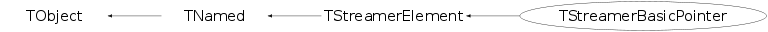

class TStreamerBasicPointer: public TStreamerElement
TStreamerBasicPointer implements the streamering of pointer to fundamental types.
Function Members (Methods)
public:
protected:
| virtual void | TObject::DoError(int level, const char* location, const char* fmt, va_list va) const |
| void | TObject::MakeZombie() |
private:
| TStreamerBasicPointer(const TStreamerBasicPointer&) | |
| TStreamerBasicPointer& | operator=(const TStreamerBasicPointer&) |
Data Members
public:
| enum TStreamerElement::ESTLtype { | kSTL | |
| kSTLstring | ||
| kSTLvector | ||
| kSTLlist | ||
| kSTLdeque | ||
| kSTLmap | ||
| kSTLset | ||
| kSTLmultimap | ||
| kSTLmultiset | ||
| kSTLbitset | ||
| }; | ||
| enum TStreamerElement::[unnamed] { | kHasRange | |
| kCache | ||
| kRepeat | ||
| kRead | ||
| kWrite | ||
| kDoNotDelete | ||
| }; | ||
| enum TObject::EStatusBits { | kCanDelete | |
| kMustCleanup | ||
| kObjInCanvas | ||
| kIsReferenced | ||
| kHasUUID | ||
| kCannotPick | ||
| kNoContextMenu | ||
| kInvalidObject | ||
| }; | ||
| enum TObject::[unnamed] { | kIsOnHeap | |
| kNotDeleted | ||
| kZombie | ||
| kBitMask | ||
| kSingleKey | ||
| kOverwrite | ||
| kWriteDelete | ||
| }; |
protected:
| Int_t | TStreamerElement::fArrayDim | number of array dimensions |
| Int_t | TStreamerElement::fArrayLength | cumulative size of all array dims |
| TClass* | TStreamerElement::fClassObject | !pointer to class of object |
| TString | fCountClass | name of the class with the counter |
| TString | fCountName | name of data member holding the array count |
| Int_t | fCountVersion | version number of the class with the counter |
| TStreamerBasicType* | fCounter | !pointer to basic type counter |
| Double_t | TStreamerElement::fFactor | !Conversion factor if a range is specified fFactor = (1<<nbits/(xmax-xmin) |
| Int_t | TStreamerElement::fMaxIndex[5] | Maximum array index for array dimension "dim" |
| TString | TNamed::fName | object identifier |
| TClass* | TStreamerElement::fNewClass | !new element class when reading |
| Int_t | TStreamerElement::fNewType | !new element type when reading |
| Int_t | TStreamerElement::fOffset | !element offset in class |
| Int_t | TStreamerElement::fSize | sizeof element |
| TMemberStreamer* | TStreamerElement::fStreamer | !pointer to element Streamer |
| Int_t | TStreamerElement::fTObjectOffset | !base offset for TObject if the element inherits from it |
| TString | TNamed::fTitle | object title |
| Int_t | TStreamerElement::fType | element type |
| TString | TStreamerElement::fTypeName | Data type name of data member |
| Double_t | TStreamerElement::fXmax | !Maximum of data member if a range is specified [xmin,xmax,nbits] |
| Double_t | TStreamerElement::fXmin | !Minimum of data member if a range is specified [xmin,xmax,nbits] |
Class Charts
{kind=link}
{kind=link}
{kind=link}
{kind=link}

Function documentation
TStreamerBasicPointer(const char* name, const char* title, Int_t offset, Int_t dtype, const char* countName, const char* countClass, Int_t version, const char* typeName)
Create a TStreamerBasicPointer object.
void Init(TObject* obj = 0)
Setup the element. If directive is a StreamerInfo and it correspond to the same class a 'countClass' the streamerInfo is used instead of the current StreamerInfo of the TClass for 'countClass'.
TStreamerElement& operator=(const TStreamerBasicPointer& )